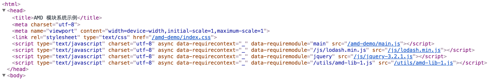

AMD 模块系统
定义
AMD（Asynchronous Module Definition）即异步模块定义。AMD 规范中，各个依赖可以异步加载而不影响正常逻辑，非常适用于浏览器环境。AMD 规范的核心 API 只有一个简单的 define() 函数。
function define(id?, dependencies?, factory) {
// ...
};
define.amd = {};
AMD 模块系统的经典实现库是 require.js[1]。
RequireJS 的基本使用
首先我们来看一下 require.js 的使用。考虑如下目录结构的静态页面服务：
root-dir
├── amd-demo // 示例页面
│ ├── index.css
│ ├── index.html // 入口页面
│ └── main.js // 入口 JS
├── common.css
└── js // 公共脚本目录
├── jquery-3.2.1.js
├── jquery-3.2.1.min.js
├── lodash.min.js
└── require.js // 模块加载器
amd-demo 目录是我们的示例页面目录，index.html 如下：
<!DOCTYPE html>
<html>
<head>
<title>ADM 模块系统示例</title>
<meta charset="utf-8">
</head>
<body>
<h1>ADM 模块系统示例</h1>
<pre id="console"></pre>
<div data-role="jquery-container"></div>
<script data-main="/amd-demo/main.js" src="/js/require.js"></script>
</body>
</html>
/**
* /amd-demo/main.js
*/
requirejs.config({
paths: {
'jquery': '/js/jquery-3.2.1'
}
});
require([
'/js/lodash.min.js',
'jquery',
], function(_, $) {
var str = 'I am using main.js, and I am loaded.';
if (_ && (typeof _.chunk === 'function')) {
var res = _.chunk(['a', 'b', 'c', 'd'], 2);
str += '\nLodash.js seems fine too. \n_.chunk gives this result: ' + JSON.stringify(res);
}
console.log(str);
document.getElementById('console').innerHTML = str;
if (typeof $ === 'function') {
$('[data-role="jquery-container"]').html('jQuery is loaded too.');
}
});
利用 require.js 进行模块加载的关键代码是：
<script data-main="/amd-demo/main.js" src="/js/require.js"></script>
这行代码在浏览器里运行，会先后发生这些事情：
- 它首先根据指定的目录
/js/require.js加载require.js - 加载完成后，
require.js会在所有的script标签里寻找data-main属性指定的路径文件作为下一个将要加载的脚本，在这里，就是/amd-demo/main.js - 开始加载
/amd-demo/main.js，加载后，解析并执行它，如果发现它有其他依赖，那么先加载所有的依赖（递归）并完成后，再执行/amd-demo/main.js里面require的回调函数。
页面就绪后，我们可以在渲染后的 DOM 树中看到 <head> 标签里多了几个 <script> 元素，Require.js 正是通过这些标签来加载相应的 AMD 模块文件的：

关键技术与原理
脚本加载
依赖分析、任务队列与递归加载